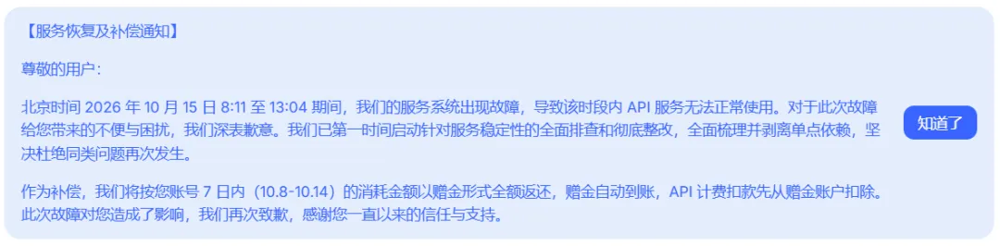
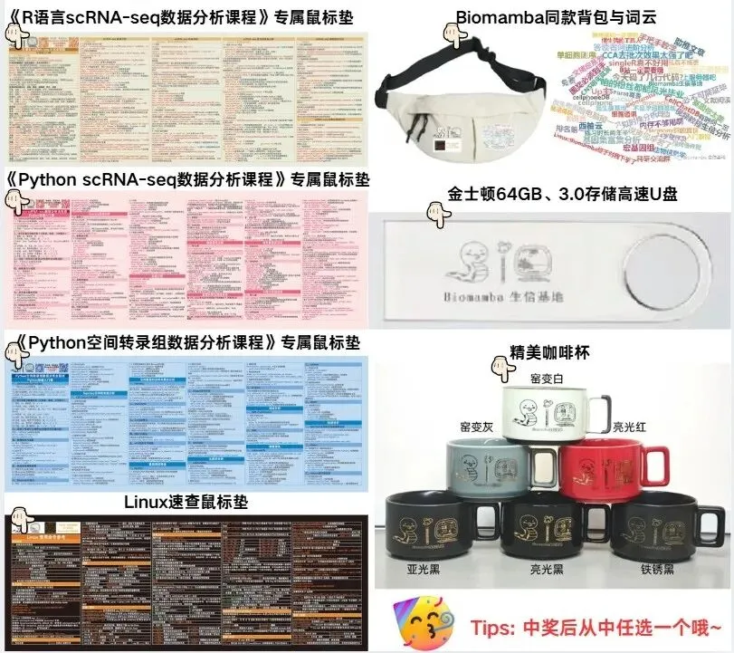

赔付方案定了！
原文：https://mp.weixin.qq.com/s?__biz=MzAwMzIzOTk5OQ==&mid=2247543143&idx=2&sn=383e91e83f3f20546e75b3f0aa6f7d4b&chksm=9b3c5037ac4bd921c11f1bec697f5abc4e6c6a00e32430a565f2bbcca2209d4e0bc525d42200#rd 合集：AI时代，不用就会被淘汰
我在期待什么啊，昨天刚一本正经的找证据证明deepseek的服务器奔溃有可能是在停机更新，并且很有希望即将退出V4.1 pro。结果光速就把我脸给打了，期望越大，失望就越大。但是也有惊喜。粱圣这波直接把前一周的API用量费用退给大家。我们也要学习大厂经验，大家如果在我们的公众号中发现有错误内容，我们也给大家赠送精美周边一份

新增了赠送余额，你收到了吗？话说，大家现在在生信工作中，更心水用哪个模型？周边一览：

欢迎交流

 留一个领取资料、开箱即用的单细胞分析镜像的助手[Biomamba_zhushou]，方便各位随时交流。同时我们也构建了交流群矩阵，欢迎大家一起讨论。
留一个领取资料、开箱即用的单细胞分析镜像的助手[Biomamba_zhushou]，方便各位随时交流。同时我们也构建了交流群矩阵，欢迎大家一起讨论。
 您点的每个赞和在看，我都认真当成了喜欢
您点的每个赞和在看，我都认真当成了喜欢